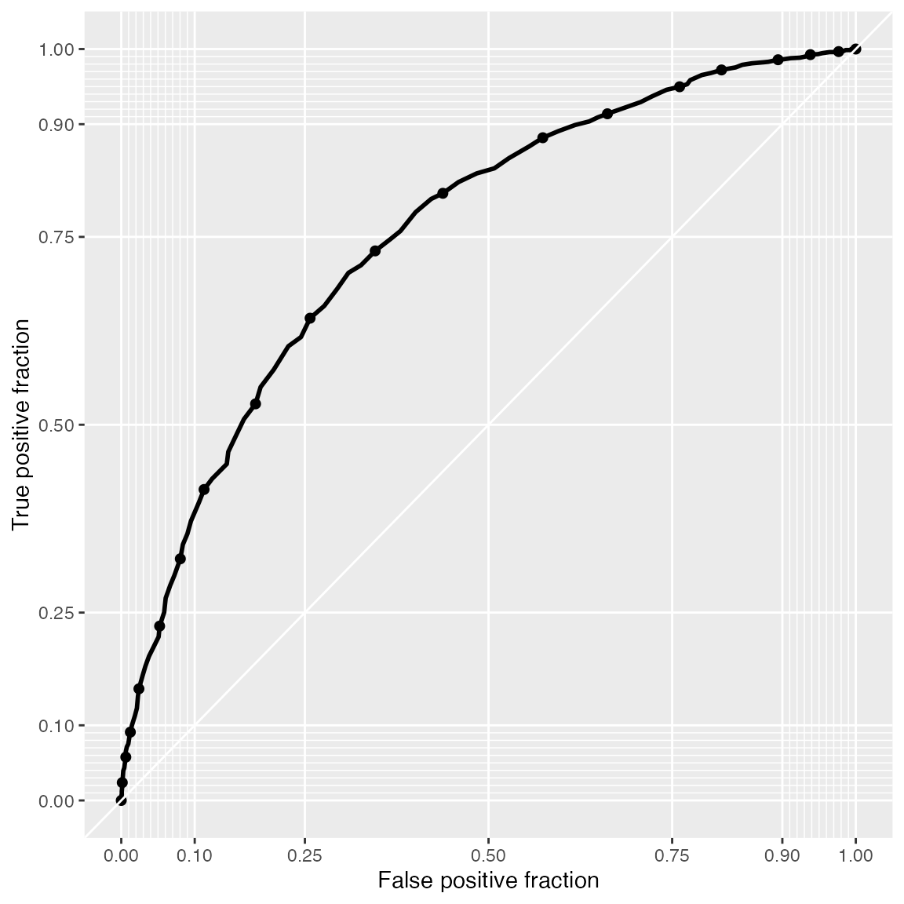

This vignette1 discusses in-sample and out-of-sample prediction within {RprobitB}. The former case refers to reproducing the observed choices on the basis of the covariates and the fitted model and subsequently using the deviations between prediction and reality as an indicator for the model performance. The latter means forecasting choice behavior for changes in the choice attributes.
For illustration, we revisit the probit model of travelers deciding between two fictional train route alternatives from the vignette on model fitting:
form <- choice ~ price + time + change + comfort | 0
data <- prepare_data(form = form, choice_data = Train)
model_train <- fit_model(
data = data,
scale = "price := -1"
)Reproducing the observed choices
{RprobitB} provides a predict() method for RprobitB_fit objects. Per default, the method returns a confusion matrix, which gives an overview of the in-sample prediction performance:
predict(model_train)
#> predicted
#> true A B
#> A 1035 439
#> B 450 1005By setting the argument overview = FALSE, the method instead returns predictions on the level of individual choice occasions:
pred <- predict(model_train, overview = FALSE)
head(pred, n = 10)
#> id idc A B true predicted correct
#> 1 1 1 0.91 0.09 A A TRUE
#> 2 1 2 0.64 0.36 A A TRUE
#> 3 1 3 0.79 0.21 A A TRUE
#> 4 1 4 0.18 0.82 B B TRUE
#> 5 1 5 0.55 0.45 B A FALSE
#> 6 1 6 0.13 0.87 B B TRUE
#> 7 1 7 0.54 0.46 B A FALSE
#> 8 1 8 0.76 0.24 B A FALSE
#> 9 1 9 0.55 0.45 A A TRUE
#> 10 1 10 0.59 0.41 A A TRUEAmong the three incorrect predictions shown here, the one for decider id = 1 in choice occasion idc = 8 is the most outstanding. Alternative B was chosen although the model predicts a probability of 75% for alternative A. We can use the convenience function get_cov() to extract the characteristics of this particular choice situation:
get_cov(model_train, id = 1, idc = 8)
#> id choiceid choice price_A time_A change_A comfort_A price_B time_B
#> 8 1 8 B 52.88904 1.916667 0 1 70.51872 2.5
#> change_B comfort_B idc
#> 8 0 0 8The trip option A was 20€ cheaper and 30 minutes faster, which by our model outweighs the better comfort class for alternative B, recall the estimated effects:
coef(model_train)
#> Estimate (sd)
#> 1 price -1.00 (0.00)
#> 2 time -25.90 (2.09)
#> 3 change -4.82 (0.84)
#> 4 comfort -14.49 (0.86)The misclassification can be explained by preferences that differ from the average decider (choice behavior heterogeneity), or by unobserved factors that influenced the choice. Indeed, the variance of the error term was estimated high:
point_estimates(model_train)$Sigma
#> [,1]
#> [1,] 661.6866
#> attr(,"names")
#> [1] "1,1"Apart from the prediction accuracy, the model performance can be evaluated more nuanced in terms of sensitivity and specificity. The following snippet exemplary shows how to visualize these measures by means of a receiver operating characteristic (ROC) curve (Fawcett 2006), using the {plotROC} package (Sachs 2017). The curve is constructed by plotting the true positive fraction against the false positive fraction at various cutoffs (here n.cuts = 20). The closer the curve is to the top-left corner, the better the binary classification.
library(plotROC)
ggplot(data = pred, aes(m = A, d = ifelse(true == "A", 1, 0))) +
geom_roc(n.cuts = 20, labels = FALSE) +
style_roc(theme = theme_grey)
Forecasting choice behavior
The predict() method has an additional data argument. Per default, data = NULL, which results into the in-sample case outlined above. Alternatively, data can be either
an
RprobitB_dataobject (for example the test subsample derived from thetrain_test()function, see the vignette on choice data),or a data frame of custom choice characteristics.
We demonstrate the second case in the following. Assume that a train company wants to anticipate the effect of a price increase on their market share. By our model, increasing the ticket price from 100€ to 110€ (ceteris paribus) draws 15% of the customers to the competitor who does not increase their prices.
predict(
model_train,
data = data.frame("price_A" = c(100,110),
"price_B" = c(100,100)),
overview = FALSE)
#> Checking for missing covariates
#> id idc A B prediction
#> 1 1 1 0.50 0.50 A
#> 2 2 1 0.35 0.65 BHowever, offering a better comfort class compensates for the higher price and even results in a gain of 7% market share:
References
Fawcett, T. 2006. “An Introduction to Roc Analysis.” Pattern Recognition Letters 27 (8). https://doi.org/10.1016/j.patrec.2005.10.010.
Sachs, M. C. 2017. “plotROC: A Tool for Plotting Roc Curves.” Journal of Statistical Software, Code Snippets 79 (2): 1–19. https://doi.org/10.18637/jss.v079.c02.